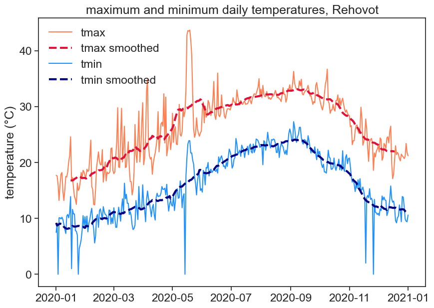

2 Exercises
let‚Äôs have fun plotting some data üòÄ
2.1 download the data
- Go to the Faculty of Agriculture’s weather station.
- Click on משיכת נתונים and download data for 1 September 2020 to 28 February 2021, with a 24h interval. Call it
data-sep2020-feb2021 - Open the .csv file with Excel, see how it looks like
- If you can’t download the data, just click here.
2.2 import packages
We need to import this data into python. First we import useful packages. Type (don’t copy and paste) the following lines in the code cell below.
2.3 import data with pandas
Import data from csv and put it in a pandas dataframe (a table). Make line 5 the header (column names)
| Unnamed: 0 | °C | °C.1 | km/h | mm | mm.1 | |
|---|---|---|---|---|---|---|
| 0 | 01/09/20 | 32.8 | 25.3 | 29.7 | 0.0 | 0.0 |
| 1 | 02/09/20 | 33.0 | 24.0 | 28.8 | 0.0 | 0.0 |
| 2 | 03/09/20 | 34.2 | 23.8 | 31.6 | 0.0 | 0.0 |
| 3 | 04/09/20 | 36.3 | 27.3 | 24.2 | 0.0 | 0.0 |
| 4 | 05/09/20 | 34.2 | 26.3 | 22.4 | 0.0 | 0.0 |
| ... | ... | ... | ... | ... | ... | ... |
| 176 | 24/02/21 | 20.6 | 9.9 | 28.8 | 0.0 | 481.7 |
| 177 | 25/02/21 | 19.4 | 9.3 | 23.3 | 0.0 | 481.7 |
| 178 | 26/02/21 | 21.3 | 8.0 | 24.2 | 0.1 | 481.8 |
| 179 | 27/02/21 | 23.4 | 9.2 | 30.6 | 0.0 | 481.8 |
| 180 | 28/02/21 | 19.7 | 9.2 | 22.4 | 0.0 | 481.8 |
181 rows × 6 columns
2.4 rename columns
rename the columns to:
date, tmax, tmin, wind, rain24h, rain_cumulative
| date | tmax | tmin | wind | rain24h | rain_cumulative | |
|---|---|---|---|---|---|---|
| 0 | 01/09/20 | 32.8 | 25.3 | 29.7 | 0.0 | 0.0 |
| 1 | 02/09/20 | 33.0 | 24.0 | 28.8 | 0.0 | 0.0 |
| 2 | 03/09/20 | 34.2 | 23.8 | 31.6 | 0.0 | 0.0 |
| 3 | 04/09/20 | 36.3 | 27.3 | 24.2 | 0.0 | 0.0 |
| 4 | 05/09/20 | 34.2 | 26.3 | 22.4 | 0.0 | 0.0 |
| ... | ... | ... | ... | ... | ... | ... |
| 176 | 24/02/21 | 20.6 | 9.9 | 28.8 | 0.0 | 481.7 |
| 177 | 25/02/21 | 19.4 | 9.3 | 23.3 | 0.0 | 481.7 |
| 178 | 26/02/21 | 21.3 | 8.0 | 24.2 | 0.1 | 481.8 |
| 179 | 27/02/21 | 23.4 | 9.2 | 30.6 | 0.0 | 481.8 |
| 180 | 28/02/21 | 19.7 | 9.2 | 22.4 | 0.0 | 481.8 |
181 rows × 6 columns
2.5 a first plot!
plot the minimum temperature:
2.6 how to deal with dates
We want the dates to appear on the horizontal axis.
Interpret ‘date’ column as a pandas datetime, see how it looks different from before
before: 01/09/20
after: 2020-09-01
| date | tmax | tmin | wind | rain24h | rain_cumulative | |
|---|---|---|---|---|---|---|
| 0 | 2020-09-01 | 32.8 | 25.3 | 29.7 | 0.0 | 0.0 |
| 1 | 2020-09-02 | 33.0 | 24.0 | 28.8 | 0.0 | 0.0 |
| 2 | 2020-09-03 | 34.2 | 23.8 | 31.6 | 0.0 | 0.0 |
| 3 | 2020-09-04 | 36.3 | 27.3 | 24.2 | 0.0 | 0.0 |
| 4 | 2020-09-05 | 34.2 | 26.3 | 22.4 | 0.0 | 0.0 |
| ... | ... | ... | ... | ... | ... | ... |
| 176 | 2021-02-24 | 20.6 | 9.9 | 28.8 | 0.0 | 481.7 |
| 177 | 2021-02-25 | 19.4 | 9.3 | 23.3 | 0.0 | 481.7 |
| 178 | 2021-02-26 | 21.3 | 8.0 | 24.2 | 0.1 | 481.8 |
| 179 | 2021-02-27 | 23.4 | 9.2 | 30.6 | 0.0 | 481.8 |
| 180 | 2021-02-28 | 19.7 | 9.2 | 22.4 | 0.0 | 481.8 |
181 rows × 6 columns
2.6.1 date as dataframe index
Make ‘date’ the dataframe’s index (leftmost column, but not really a column!)
| tmax | tmin | wind | rain24h | rain_cumulative | |
|---|---|---|---|---|---|
| date | |||||
| 2020-09-01 | 32.8 | 25.3 | 29.7 | 0.0 | 0.0 |
| 2020-09-02 | 33.0 | 24.0 | 28.8 | 0.0 | 0.0 |
| 2020-09-03 | 34.2 | 23.8 | 31.6 | 0.0 | 0.0 |
| 2020-09-04 | 36.3 | 27.3 | 24.2 | 0.0 | 0.0 |
| 2020-09-05 | 34.2 | 26.3 | 22.4 | 0.0 | 0.0 |
| ... | ... | ... | ... | ... | ... |
| 2021-02-24 | 20.6 | 9.9 | 28.8 | 0.0 | 481.7 |
| 2021-02-25 | 19.4 | 9.3 | 23.3 | 0.0 | 481.7 |
| 2021-02-26 | 21.3 | 8.0 | 24.2 | 0.1 | 481.8 |
| 2021-02-27 | 23.4 | 9.2 | 30.6 | 0.0 | 481.8 |
| 2021-02-28 | 19.7 | 9.2 | 22.4 | 0.0 | 481.8 |
181 rows × 5 columns
2.7 plot again, now with dates
Plot minimum temperature, now we have dates on the horizontal axis

2.8 we’re getting there! the graph could look better
Let’s make the graph look better: labels, title, slanted dates, etc
# creates figure (the canvas) and the axis (rectangle where the plot sits)
fig, ax = plt.subplots(1, figsize=(10,7))
# two line plots
ax.plot(df['tmax'], color="coral", label="Temp (max)")
ax.plot(df['tmin'], color="dodgerblue", label="Temp (min)")
# axes labels and figure title
ax.set_xlabel('date')
ax.set_ylabel('temperature (°C)')
ax.set_title('maximum and minimum temperatures')
# some ticks adjustments
ax.set_yticks(np.arange(0,45,5)) # we can choose where to put ticks
ax.grid(axis='y') # makes horizontal lines
plt.gcf().autofmt_xdate() # makes slanted dates
# legend
ax.legend(loc='upper right')
# save png figure
plt.savefig("temp_max_min.png")
2.9 make the following figure
Use the following function to plot bars for daily rainfall
Can you write yourself some lines of code that calculate the cumulative rainfall from the daily rainfall?
Show the code
# creates figure (the canvas) and the axis (rectangle where the plot sits)
fig, ax = plt.subplots(1, figsize=(10,7))
# line and bar plots
ax.bar(df.index, df['rain24h'], color="mediumblue", label="daily rainfall")
# there are many ways of calculating the cumulative rain
# method 1, use a for loop:
# rain = df['rain24h'].to_numpy()
# cumulative = rain * 0
# for i in range(len(rain)):
# cumulative[i] = np.sum(rain[:i])
# df['cumulative1'] = cumulative
# method 2, use list comprehension:
# rain = df['rain24h'].to_numpy()
# cumulative = [np.sum(rain[:i]) for i in range(len(rain))]
# df['cumulative2'] = cumulative
# method 3, use existing functions:
df['cumulative3'] = np.cumsum(df['rain24h'])
ax.plot(df['cumulative3'], color="deepskyblue", label="cumulative rainfall")
# compare our cumulative rainfall with the downloaded data
# ax.plot(df['rain_cumulative'], 'x')
# axes labels and figure title
ax.set(xlabel='date',
ylabel='rainfall (mm)',
title='daily and cumulative rainfall',
xlim=pd.to_datetime(['2020-11-01','2021-02-28'])
)
# some ticks adjustments
plt.gcf().autofmt_xdate() # makes slanted dates
# legend
ax.legend(loc='upper left', frameon=False)
# save png figure
plt.savefig("cumulative_rainfall.png")2.10 make another figure
In order to choose just a part of the time series, you can use the following:
Show the code
# creates figure (the canvas) and the axis (rectangle where the plot sits)
fig, ax = plt.subplots(1, figsize=(10,7))
# define date range
start_date = '2021-01-01'
end_date = '2021-01-31'
january = df.loc[start_date:end_date, 'tmax']
# plots
ax.plot(january, color="darkgoldenrod", label="daily max")
ax.plot(january*0 + january.mean(), color="gold", linestyle="--", label="average daily max")
# axes labels and figure title
ax.set_xlabel('date')
ax.set_ylabel('temperature (°C)')
ax.set_title('average daily maximum temperature for January 2021')
# some ticks adjustments
plt.gcf().autofmt_xdate() # makes slanted dates
# legend
ax.legend(loc='upper right', frameon=False)
# save png figure
plt.savefig("average_max_temp.png")
2.11 one last figure for today
Use the following code to create histograms with user-defined bins:
Play with the bins, see what happens. What does density=True do?
# creates figure (the canvas) and the axis (rectangle where the plot sits)
fig, ax = plt.subplots(1, figsize=(10,7))
# histogram
b = np.arange(0, 56, 5) # bins from 0 to 55, width = 5
ax.hist(df['wind'], bins=b, density=True)
# axes labels and figure title
ax.set(xlabel='max wind speed (km/h)',
ylabel='frequency',
title='frequency of maximum wind speed'
)
# save png figure
plt.savefig("wind-histogram.png")
2.12 homework
Go back to the weather station website, download one year of data from 01.01.2020 to 31.12.2020 (24h data). If you can’t download the data, just click here.
2.12.1 graph 1
Make one graph with the following:
- daily tmax and tmin
- smoothed data for tmax and tmin
In order to smooth the data with a 30 day window, use the following function:
df['tmin'].rolling(30, center=True).mean()
This means that you will take the mean of 30 days, and put the result in the center of this 30-day window.
Play with this function, see what you can do with it. What happens when you change the size of the window? Why is the smoothed data shorter than the original data? See the documentation for rolling to find more options.
Show the code
fig, ax = plt.subplots(figsize=(10,7))
col_names = ['date', 'tmax', 'tmin', 'wind', 'rain24h', 'rain_cumulative']
df2 = pd.read_csv("1year.csv",
skiprows=5,
encoding='latin1',
names=col_names,
parse_dates=['date'],
dayfirst=True,
index_col='date'
)
tmin_smooth = df2['tmin'].rolling('30D', center=True).mean()
tmax_smooth = df2['tmax'].rolling(30, center=True).mean()
ax.plot(df2['tmax'], label='tmax', color="coral")
ax.plot(tmax_smooth, label='tmax smoothed', color="crimson", linestyle="--", linewidth=3)
ax.plot(df2['tmin'], label='tmin', color="dodgerblue")
ax.plot(tmin_smooth, label='tmin smoothed', color="navy", linestyle="--", linewidth=3)
ax.legend(frameon=False)
ax.set(ylabel='temperature (°C)',
title='maximum and minimum daily temperatures, Rehovot'
)
plt.savefig("t_smoothed.png")
2.12.2 graph 2
Make another graph that focuses on a part of the year, not the whole thing. We saw before how to do that. Put on this graph two lines, representing two variables of your choosing. Give these lines good colors, and maybe different linestyles (solid, dashed, dotted) if you feel fancy.
2.12.3 graph 3
Choose another variable, and make two histograms (each in its own panel), each representing a different time interval. Here is an example how you make subplots:
Show the code
Of course, I plotted random data as a line plot, your task is to plot histograms instead.